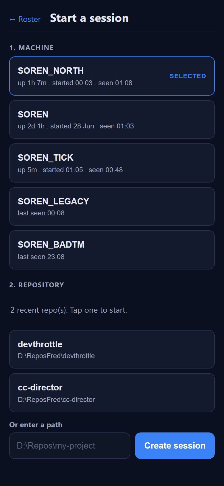
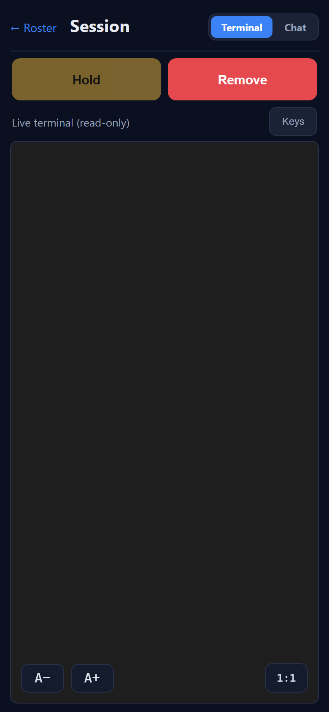

Title: [Mobile] New-session machine picker: show Director uptime + start time
(up 3h 22m . started 6:20 AM) alongside last seen.
Branch: issue-848-mobile-director-uptime
Surface: mobile React PWA (mobile/), served by the Gateway at /m.
Scope: mobile-only display change to Step 1 (machine picker) of the "+ New session" flow.
mobile/src/api/client.ts - added startedAt: string to the
DirectorInfo interface and mapped d.startedAt in the
getDirectors projection (the OpenAPI schema.ts already carried
startedAt; no regen needed).mobile/src/sessions/waiting.ts - factored a shared, prefix-free
durationLabel(sinceIso, now) that climbs the existing ladder
(just now / Xm / Xh Ym / Xd Yh) and
rewrote waitingLabel to delegate to it (its output is byte-for-byte unchanged).mobile/src/pages/NewSession.tsx - directorSubtitle(d, now) now renders
up <uptime> . started <startTime> . seen <lastSeen>. Uptime is
durationLabel(d.startedAt, now) prefixed up and ticks live off a
useNow(1000) hook (no /directors refetch). Started is absolute
(time-of-day if today, short date if older). Seen is the kept last-seen. A missing/unparseable
startedAt degrades to the prior last-seen-only subtitle - never an
up NaN / Invalid Date. The separator is ASCII " . "
(the global no-Unicode rule forbids the middle dot sketched in the layout block).The built PWA (mobile/dist) was served by an isolated static+mock server
(mock-server.py, loopback port 8850) that stubs /directors,
/directors/{id}/repos and POST .../sessions - no real Gateway or Director
was touched. A headless Chromium at an iPhone-sized viewport (390 x 844, deviceScaleFactor 2,
mobile) drove the page (capture.py). The stubbed /directors covers every
acceptance case: a started-today + hours-rung Director (SOREN_NORTH), an older + days-rung Director
(SOREN), a minutes-rung live-ticking Director (SOREN_TICK), a Director with no
startedAt (SOREN_LEGACY) and one with an invalid startedAt (SOREN_BADTM).
Note on time/date format: the captures show 24-hour times
(00:03) and 28 Jun day-month order because the headless test browser's
default locale resolved that way. The code uses the default-locale form (toLocaleTimeString([])
/ toLocaleDateString([])), exactly as the pre-existing last-seen rendering does, so on
a US-locale device the same code renders 12:03 AM and Jun 28. The
acceptance criteria (time-of-day when today, short date when older) are met regardless of locale.
| # | Criterion | Expected | Actual (observed) | Result |
|---|---|---|---|---|
| AC1 | Row subtitle reads up . started . seen |
Each machine row shows the three segments. | SOREN_NORTH: up 1h 6m . started 00:03 . seen 01:08 (see t0 screenshot - all rows
with a valid startedAt show all three segments). |
PASS |
| AC2 | Uptime ticks live without reload | Uptime increases over a short interval with no refetch. | Over a 65s wait (no reload): SOREN_TICK up 3m -> up 5m;
SOREN_NORTH up 1h 6m -> up 1h 7m (t0 vs t1 screenshots). |
PASS |
| AC3 | started is absolute: time today, short date if older |
Started-today shows a time-of-day; older shows a short date. | SOREN_NORTH (today) started 00:03 and SOREN_TICK (today) started 01:05;
SOREN (2 days old) started 28 Jun. |
PASS |
| AC4 | Existing last-seen still shown | Every row still shows its last-seen. | seen 01:08 / seen 01:03 / seen 00:48 on the valid rows;
degraded rows show last seen 00:08 / last seen 23:08. |
PASS |
| AC5 | Uptime follows the duration ladder | just now / Xm / Xh Ym / Xd Yh. | Minutes: SOREN_TICK up 3m; hours: SOREN_NORTH up 1h 6m; days:
SOREN up 2d 1h. |
PASS |
| AC6 | startedAt from the client; graceful when missing/invalid |
Mapped by getDirectors; missing/invalid degrades to last-seen only, no "Invalid Date". |
SOREN_LEGACY (no startedAt) -> last seen 00:08; SOREN_BADTM
(startedAt="not-a-date") -> last seen 23:08. No up,
no started, no NaN/Invalid Date. |
PASS |
| AC7 | No regression; clean build; routine dotnet build does not invoke npm | Repos still load on selection, create still works; dotnet build cc-director.sln
clean and npm-free. |
Repo step loaded 2 recent repo(s); tapping a repo created and opened the session
(URL -> /m/session/stub-session-1, Terminal view shown). Full Debug solution
build: Build succeeded. 0 Warning(s) 0 Error(s) with zero npm/BuildMobileApp lines
(the mobile MSBuild target is Release/BuildMobile-gated). See dotnet-build.log. |
PASS |


No drift. This is a mobile-only presentational change in one React screen plus a shared formatter
refactor. No backend, no architecture change, no security posture change - no
docs/cencon/ updates required.
cd mobile && npm ci && npm run buildpython docs/cencon/proof/issue-848/mock-server.py 8850 <abs>/mobile/distpython docs/cencon/proof/issue-848/capture.py http://127.0.0.1:8850 docs/cencon/proof/issue-848I believe this is finished. All seven acceptance criteria were verified on a phone-sized viewport with proof above, and the full Debug solution build is clean and npm-free.